The various strategies discussed are as follows:
Bullish Strategies
Bull Call Spread
The bull call spread is a strategy applied when the view on the market is moderately bullish. It is a two-leg spread strategy traditionally executed using ITM and OTM options
Strategy:
Note that both the options belong to the same underlying, have same expiration date and are in the same ratio (1:1).
This is a net debit strategy as initially we need to put money into the strategy (ATM option is costlier than OTM option).
Both the maximum loss and gain are capped as can be seen from the below calculations.
The calculations are as follows:
𝑆𝑝𝑟𝑒𝑎𝑑 = 𝑆𝑡𝑟𝑖𝑘𝑒𝑃𝑟𝑖𝑐𝑒𝑜𝑓𝑆ℎ𝑜𝑟𝑡𝐶𝑎𝑙𝑙 – 𝑆𝑡𝑟𝑖𝑘𝑒 𝑃𝑟𝑖𝑐𝑒 𝑜𝑓 𝐿𝑜𝑛𝑔 𝐶𝑎𝑙𝑙
𝑁𝑒𝑡 𝐷𝑒𝑏𝑖𝑡 = 𝑀𝑎𝑥𝑖𝑚𝑢𝑚 𝐿𝑜𝑠𝑠 = 𝑃𝑟𝑒𝑚𝑖𝑢𝑚 𝑜𝑓 𝐿𝑜𝑛𝑔 𝐶𝑎𝑙𝑙−𝑃𝑟𝑒𝑚𝑖𝑢𝑚 𝑜𝑓
𝑆ℎ𝑜𝑟𝑡 𝐶𝑎𝑙𝑙 𝑀𝑎𝑥𝑖𝑚𝑢𝑚 𝑃𝑟𝑜𝑓𝑖𝑡 = 𝑆𝑝𝑟𝑒𝑎𝑑 – 𝑁𝑒𝑡 𝐷𝑒𝑏𝑖𝑡
𝐵𝑟𝑒𝑎𝑘 − 𝑒𝑣𝑒𝑛 𝑝𝑜𝑖𝑛𝑡 = 𝑆𝑡𝑟𝑖𝑘𝑒 𝑃𝑟𝑖𝑐𝑒 𝑜𝑓 𝐿𝑜𝑛𝑔 𝐶𝑎𝑙𝑙 + 𝑁𝑒𝑡 𝐷𝑒𝑏𝑖𝑡
(𝑃𝑜𝑖𝑛𝑡 𝑜𝑓 𝑧𝑒𝑟𝑜 𝑝𝑎𝑦𝑜𝑓𝑓)
For our Example,
𝑆𝑝𝑟𝑒𝑎𝑑 = 105 –100 = 5
𝑁𝑒𝑡 𝐷𝑒𝑏𝑖𝑡 = 𝑀𝑎𝑥𝑖𝑚𝑢𝑚 𝐿𝑜𝑠𝑠
= 3.30−1.50 = 1.80
𝑀𝑎𝑥𝑖𝑚𝑢𝑚 𝑃𝑟𝑜𝑓𝑖𝑡 = 5 – 1.80 = 3.20
𝐵𝑟𝑒𝑎𝑘 − 𝑒𝑣𝑒𝑛 𝑝𝑜𝑖𝑛𝑡 = 100+1.80 = 101.80
(𝑃𝑜𝑖𝑛𝑡 𝑜𝑓 𝑧𝑒𝑟𝑜 𝑝𝑎𝑦𝑜𝑓𝑓)
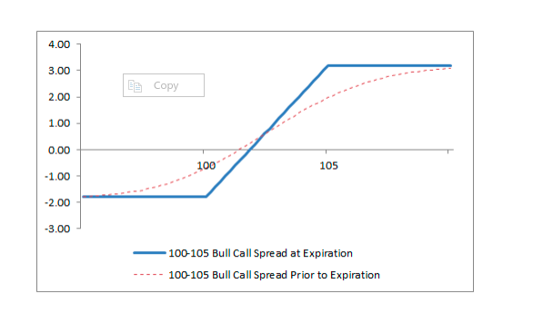
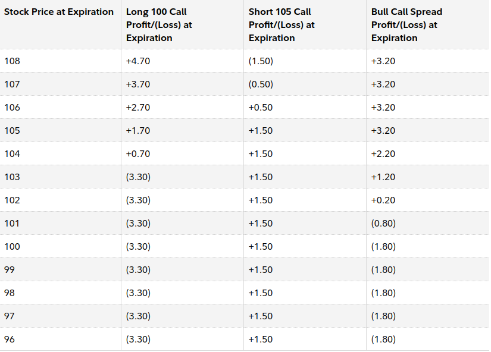
Greeks:
Delata and Gamma:
The Bull Call Spread is a bullish strategy which makes money when the price of the underlying increases. Thus, it has a positive delta. As it consists of one long and one short call, the change in delta when the underlying changes is less. Thus, it has a near-zero gamma.
Vega:
As the bull call spread has a long call and a short call, the rise in premiums due to increased volatility is balanced out, and thus it has a near zero Vega.
Theta:
The option premium values decrease as time passes because of theta. However, the decrease in premiums is not the same for all strikes and depends on the price of the underlying. If the underlying is close to the long call option, then the price of the bull call spread value decreases (loses money). This is because the long call is closest to the money, and thus the decrease in price of the long option is more than that of the short option. However, if the underlying is closer to the short option, the bull call spread value increases (makes money). This is because the decrease in premium of the short option is more than that of the long option.
Strike Selection:
The best strike to be selected (one which gives maximum profit) depends on the time in which the target is expected to be reached as well as in which half of the month the trade is being executed on.
First Half:
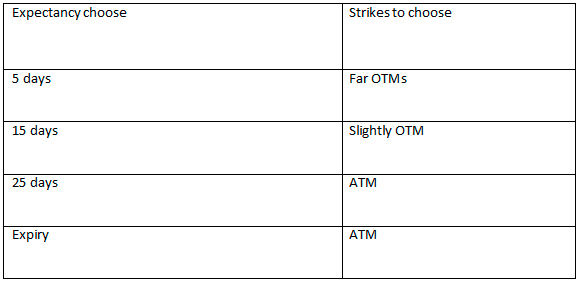
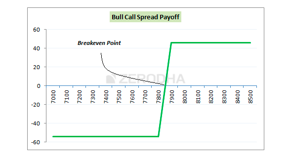
Second Half:
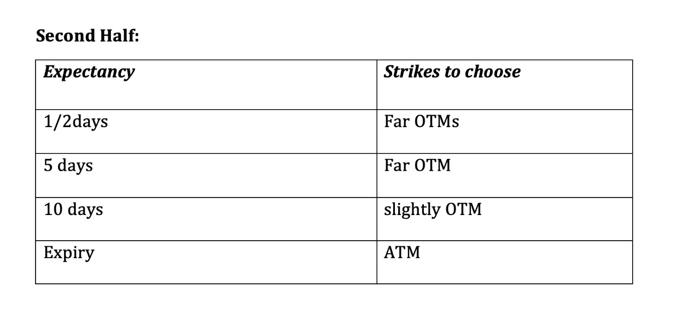
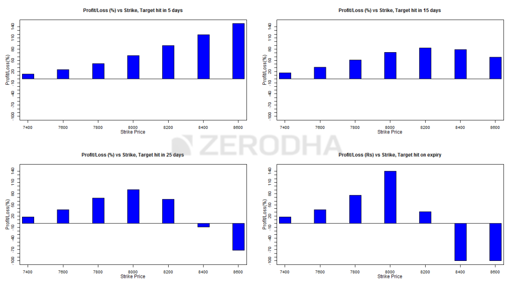
Benefits compared to naked call option:
Bull Put Spread
The bull put spread strategy is a bullish strategy, very similar to the bull call spread except that it is executed using put options rather than call options.
Strategy:
Note that both the options belong to the same underlying, have same expiration date and are in the same ratio (1:1).
This is a net credit strategy as initially, the cost of buying OTM Put option is less than the premium received by selling an ITM option. Similar to bear call spread, both the profit and loss are capped.
The calculations are as follows:
𝑆𝑝𝑟𝑒𝑎𝑑 = 𝑆𝑡𝑟𝑖𝑘𝑒 𝑃𝑟𝑖𝑐𝑒 𝑜𝑓 𝑆ℎ𝑜𝑟𝑡 𝐶𝑎𝑙𝑙 – 𝑆𝑡𝑟𝑖𝑘𝑒 𝑃𝑟𝑖𝑐𝑒 𝑜𝑓 𝐿𝑜𝑛𝑔 𝐶𝑎𝑙𝑙
𝑁𝑒𝑡 𝐶𝑟𝑒𝑑𝑖𝑡. = 𝑀𝑎𝑥𝑖𝑚𝑢𝑚 𝑃𝑟𝑜𝑓𝑖𝑡.
= 𝑃𝑟𝑒𝑚𝑖𝑢𝑚 𝑜𝑓 𝑆ℎ𝑜𝑟𝑡 𝐶𝑎𝑙𝑙 − 𝑃𝑟𝑒𝑚𝑖𝑢𝑚 𝑜𝑓 𝐿𝑜𝑛𝑔 𝐶𝑎𝑙𝑙
𝑀𝑎𝑥𝑖𝑚𝑢𝑚 𝐿𝑜𝑠𝑠 = 𝑆𝑝𝑟𝑒𝑎𝑑 – 𝐼𝑛𝑖𝑡𝑖𝑎𝑙 𝑃𝑟𝑜𝑓𝑖𝑡
𝐵𝑟𝑒𝑎𝑘 − 𝑒𝑣𝑒𝑛 𝑝𝑜𝑖𝑛𝑡 = 𝑆𝑡𝑟𝑖𝑘𝑒 𝑃𝑟𝑖𝑐𝑒 𝑜𝑓 𝐿𝑜𝑛𝑔 𝐶𝑎𝑙𝑙 + 𝐼𝑛𝑖𝑡𝑖𝑎𝑙 𝑃𝑟𝑜𝑓𝑖𝑡
(𝑃𝑜𝑖𝑛𝑡 𝑜𝑓 𝑧𝑒𝑟𝑜 𝑝𝑎𝑦𝑜𝑓𝑓)
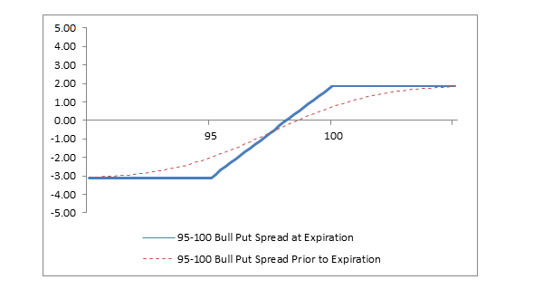
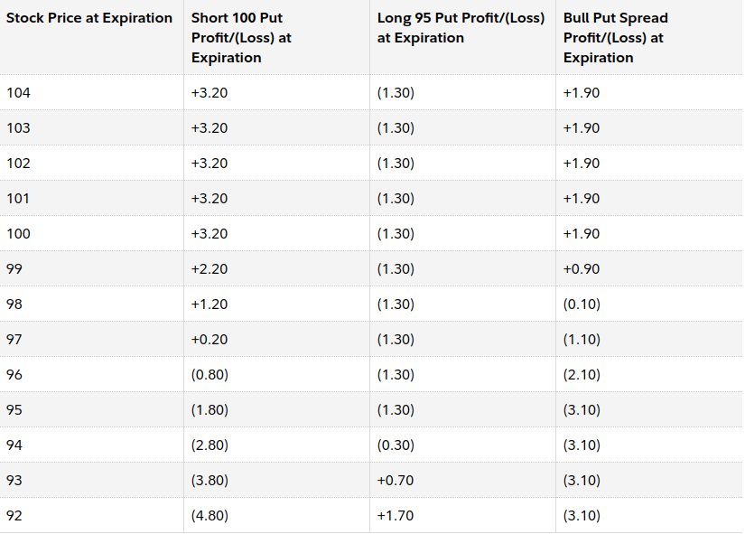
The Option Greeks and Strike selection for this strategy is similar to Bull Put Effect.
Call Ratio Back Spread
The Call Ratio Back Spread is a 3-leg strategy, applied when the view on the market is outrightly bullish. It involves buying 2 OTM call option and selling 1 OTM call option.
Unlike the previous strategies, the profit is not capped. Also, even if the market moves against the trend, if the market moves, the strategy will still make money.
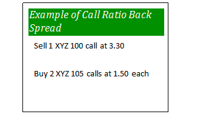
The strategy loses money if the market remains stagnant.
Strategy:
Note that both the options belong to the same underlying, have same expiration date and are in the ratio 2:1 (OTM: ITM).
This is a net credit strategy as the cost of the ITM options finances the buying of the OTM options.
The calculations for the strategy are as follows:
𝑆𝑝𝑟𝑒𝑎𝑑 = 𝑆𝑡𝑟𝑖𝑘𝑒 𝑜𝑓 𝑡ℎ𝑒 𝑂𝑇𝑀 𝑜𝑝𝑡𝑖𝑜𝑛 – 𝑆𝑡𝑟𝑖𝑘𝑒 𝑜𝑓 𝑡ℎ𝑒 𝐼𝑇𝑀 𝑜𝑝𝑡𝑖𝑜𝑛
𝑁𝑒𝑡 𝐶𝑟𝑒𝑑𝑖𝑡 = 𝑃𝑟𝑒𝑚𝑖𝑢𝑚 𝑜𝑓 𝑠ℎ𝑜𝑟𝑡 𝑜𝑝𝑡𝑖𝑜𝑛 – 2∗ 𝑃𝑟𝑒𝑚𝑖𝑢𝑚 𝑜𝑓 𝑙𝑜𝑛𝑔 𝑜𝑝𝑡𝑖𝑜𝑛
𝑀𝑎𝑥𝑖𝑚𝑢𝑚 𝑃𝑟𝑜𝑓𝑖𝑡 = 𝑈𝑛𝑙𝑖𝑚𝑖𝑡𝑒𝑑
𝑀𝑎𝑥𝑖𝑚𝑢𝑚 𝐿𝑜𝑠𝑠 = 𝑆𝑝𝑟𝑒𝑎𝑑 – 𝑁𝑒𝑡 𝐶𝑟𝑒𝑑𝑖𝑡
𝐿𝑜𝑤𝑒𝑟 𝐵𝑟𝑒𝑎𝑘𝑒𝑣𝑒𝑛 = 𝐿𝑜𝑤𝑒𝑟 𝑆𝑡𝑟𝑖𝑘𝑒 + 𝑁𝑒𝑡 𝐶𝑟𝑒𝑑𝑖𝑡
𝑈𝑝𝑝𝑒𝑟 𝐵𝑟𝑒𝑎𝑘𝑒𝑣𝑒𝑛 = 𝑈𝑝𝑝𝑒𝑟 𝑆𝑡𝑟𝑖𝑘𝑒 + 𝑀𝑎𝑥𝑖𝑚𝑢𝑚 𝐿𝑜𝑠𝑠
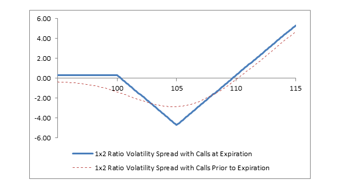
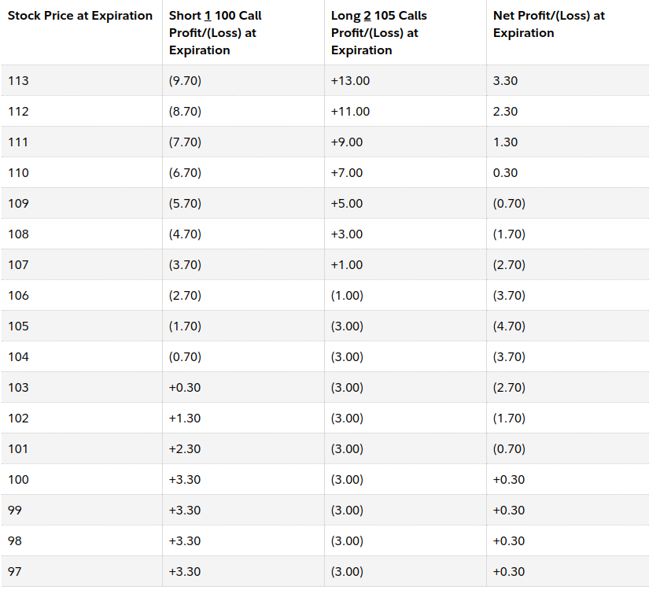
Greeks:
Delta:
The initial delta of bull call spread is positive. Delta increases as the stock price increases; thus, the strategy position has a positive gamma. As expiration approaches, the position delta approaches −1.00 if the short call is in the money and the long calls are out of the money. In this case, the delta of the short call approaches −1.00, and the deltas of the long calls approach zero.
When the stock price is above the strike price of the long calls as expiration approaches, the position delta approaches +1.00. In this case, the delta of the short call approaches −1.00 and the deltas of the two long calls approach +1.00 each. The position delta approaches zero as the stock price falls below the strike price of the short call, because the deltas of all calls approach zero.
Vega:
Volatility is a measure of the fluctuation of the stock price. As volatility rises, option premiums tend to swell if all other factors remain constant. Long options, therefore, rise in price and make money when volatility rises, and short options rise in price and lose money when volatility rises. The opposite is observed when volatility falls. Long options lose money and short options make money.
The call back ratio spread has a net positive Vega, as it has two long calls and one short call. However, the impact of changing volatility (Vega) varies depending on the time to expiration and the relationship of the stock price to the strike prices.
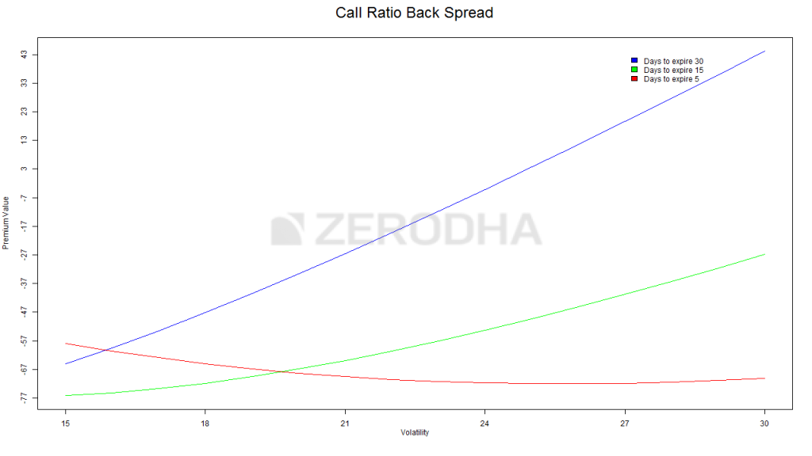
The increase in volatility when there is ample time for the expiry increases the payoff of Call Ratio back spread, as can be seen in the blue and green lines. However, when there is less time to expiry, increase in volatility has a negative impact on the strategy. This is because as the volatility increases with few days left to expiry, the chances of the option to expire OTM increases, and hence premium decreases.
Theta:
The value of an option decreases as the expiration approaches, all other factors remaining constant. This is called time erosion. Theta measures how much time erosion affects the net price of the position. Long options have a negative theta, and short options have a positive theta.
The Call Ratio Back Spread has a negative theta, because of the two long calls and one short call. However, the impact of time erosion varies depending on the relationship of the stock price. When first established, assuming the stock price is at or above the strike price of the short call and there are 14 days or more to expiration, the net theta is negative, because the total negative theta of the two long calls is greater than the positive theta of the one short call.
As a result, the position loses money from time decay. As expiration approaches, if the stock price is close to or above the strike price of the long calls (higher strike), then the net theta is negative. If the stock price is close to the strike price of the short call (lower strike), then the net theta tends to be positive. The net theta approaches zero if the stock price falls below the lower strike.
The main advantage of this strategy is that it makes a limited profit even if the market goes against you (moves down) and an unlimited profit if the market moves up. However, the strategy loses money if the price does not move in any direction.
Thus, if the move of the underlying is expected in either direction, most probably in the upward direction, this strategy would be a perfect fit. However, the volatility must also be factored in. If the volatility is expected to decrease, this strategy might lose money and hence, might not be a good fit.
Bear Call Ladder:
Contrary to the name, the bear call ladder is actually a bullish strategy. This is an improvisation of the aforementioned Call Ratio Back Spread and can be implemented when the view on the market is out rightly bullish.
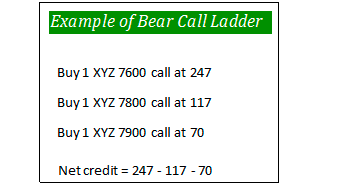
Strategy:
Note that both the options belong to the same underlying, have same expiration date and are in the ratio 1:1:1 (ITM (Sell): ATM (Buy): OTM(Buy)).
This is a net credit strategy as writing an ITM option should finance the buying of ATM and OTM options.
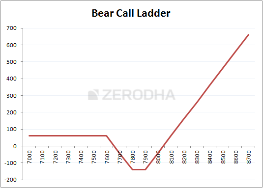
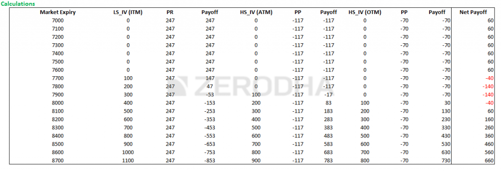
The calculations of the strategy are as follows:
𝑁𝑒𝑡 𝐶𝑟𝑒𝑑𝑖𝑡 = 𝑃𝑟𝑒𝑚𝑖𝑢𝑚 𝑜𝑓 𝐼𝑇𝑀 𝑠ℎ𝑜𝑟𝑡 − (𝑃𝑟𝑒𝑚𝑖𝑢𝑚 𝑜𝑓 𝐴𝑇𝑀 𝑙𝑜𝑛𝑔 + 𝑃𝑟𝑒𝑚𝑖𝑢𝑚 𝑜𝑓 𝑂𝑇𝑀 𝑙𝑜𝑛𝑔)
𝑀𝑎𝑥𝑖𝑚𝑢𝑚 𝐿𝑜𝑠𝑠 = (𝐷𝑖𝑓𝑓𝑒𝑟𝑒𝑛𝑐𝑒 𝑏𝑒𝑡𝑤𝑒𝑒𝑛 𝐼𝑇𝑀 𝑎𝑛𝑑 𝑂𝑇𝑀) − 𝑁𝑒𝑡 𝐶𝑟𝑒𝑑𝑖𝑡
𝐿𝑜𝑤𝑒𝑟 𝐵𝑟𝑒𝑎𝑘𝑒𝑣𝑒𝑛 = 𝐿𝑜𝑤𝑒𝑟 𝑆𝑡𝑟𝑖𝑘𝑒 + 𝑁𝑒𝑡 𝐶𝑟𝑒𝑑𝑖𝑡
𝑈𝑝𝑝𝑒𝑟 𝐵𝑟𝑒𝑎𝑘𝑒𝑣𝑒𝑛 = 𝑆𝑡𝑟𝑖𝑘𝑒 𝑜𝑓 𝐴𝑇𝑀 + 𝑆𝑡𝑟𝑖𝑘𝑒 𝑜𝑓 𝑂𝑇𝑀 – 𝑆𝑡𝑟𝑖𝑘𝑒 𝑜𝑓 𝐼𝑇𝑀 – 𝑁𝑒𝑡 𝐶𝑟𝑒𝑑𝑖𝑡
This strategy makes money (limited) when the price of the underlying decreases and makes unlimited profit when the price of the underlying increases. However, it loses money (risk is limited) when the underlying does not move in either direction.
Greeks:
Delta:
Because this is a bullish strategy at initiation, Delta is initially positive and thereby benefits the position when the underlying price rises, and vice versa. However, Delta turns negative as the underlying price continues rising and inches towards the strikes of the short Calls. As a result, rising underlying price eventually starts hurting the option position, and vice versa.
Gamma:
Gamma peaks out at the lower strike, lifting the Delta as the underlying price rises, and vice versa. It eventually turns negative as the underlying moves towards the middle strike, by which time rising prices start dragging the Delta into negative zone. Gamma bottoms out at the higher strike, dragging the Delta further into negative if the underlying price continues rises.
Vega:
The effect of Vega on this strategy is dependent on the time left till expiration of the option.
If the option has ample time to expiry (> 5-6 days) then the increase in Vega benefits the option strategy with the maximum increase seen when there is the most amount of time to expiry. However, when the time period is less (fewer days to expire) increase in Vega negatively affects the strategy as increased Vega increases the chances of the option to expiry OTM.
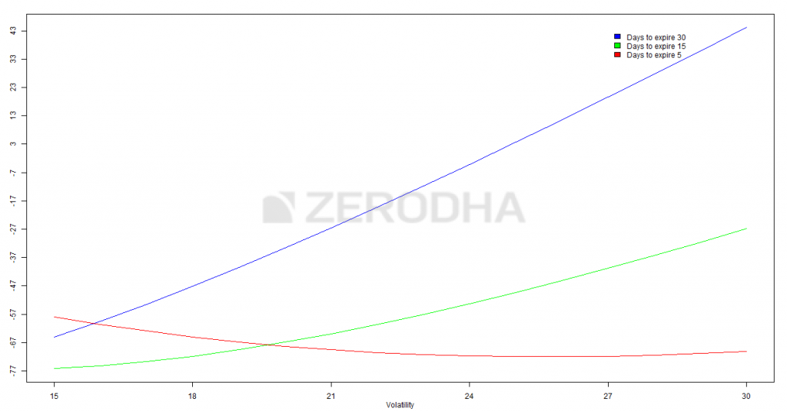
Theta:
When the underlying price is below the lower breakeven point or above the upper breakeven point, Theta is positive, because of which time decay benefits the position. On the other hand, when the underlying price is in between the two breakeven points, Theta is negative, because of which time decay hurts the position.
Advantage: